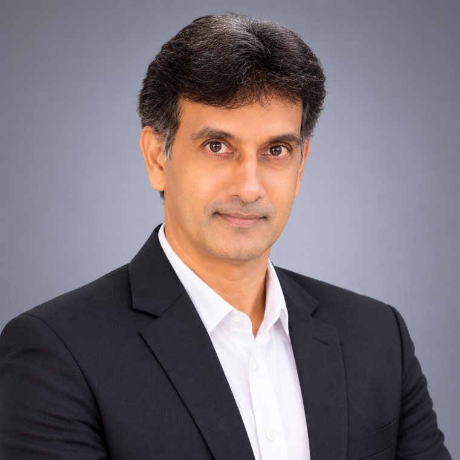

The founder chapter
Founded Senzoft to turn ambitious ideas into secure, scalable software and digital services.
Mahendran S brings three decades of operational discipline, technology experience and people leadership to Senzoft Software Solutions.

Not one leap, but a sequence of foundations: learning technology, running real-world operations, scaling an enterprise and finally building a software company.
Founded Senzoft to turn ambitious ideas into secure, scalable software and digital services.
Operations Director—strategy, infrastructure scaling and enterprise growth.
Manager, Operations at Blue Lotus Technologies, connecting people, process and infrastructure.
A decade coordinating administration, facilities and teams in a high-responsibility environment.
Software and systems education at NIIT, followed by a first role as a programmer trainee.
From software systems to hospital administration and enterprise operations, his career has been shaped by one consistent idea: strong systems help people do their best work.
Mahendran is known for cross-functional leadership, optimizing business workflows and building high-performing teams. His experience connects business decisions with the systems, infrastructure and people required to execute them.
His career began in software as a programmer trainee. That technical foundation grew into leadership across administration, infrastructure scaling and enterprise operations.
At Senzoft, he leads the vision, products and people behind secure, scalable software products and digital services.
A CEO portfolio should show how a leader thinks. These themes connect Mahendran’s experience in software, administration and enterprise operations to the company he is building today.
Technology creates value when the business need, operating reality and desired outcome are understood before execution begins.
Good operations remove friction now. Strong systems create the structure for teams, infrastructure and service quality to scale.
Sustainable organizations distribute knowledge, strengthen coordination and give people the clarity to perform with confidence.
From writing software to directing operations, the work has always been about turning complexity into dependable execution.
A journey from programming to administration, operations leadership and technology entrepreneurship.
Senzoft Software Solutions · Leads the company’s vision, products and people.
Blue Lotus Technologies Pvt Ltd · Joined as Manager, Operations and became Operations Director in 2015, directing strategic operations, infrastructure scaling and enterprise growth.
Elite Asian Hospital · Led hospital administration, facility logistics and staff coordination in Chennai.
Crystal Computers Service (P) Ltd · Software development, troubleshooting and documentation.
A simple operating model for moving from an ambitious idea to an organization capable of delivering it consistently.
Senzoft Software Solutions is a Chennai-based technology company turning ambitious ideas into secure, scalable software products and digital services.
Explore Senzoft ↗Senzoft’s public service portfolio spans strategy, engineering, data, cloud, security, modernization, quality and ongoing operations.
Before software, before process, before scale—the real problem must be understood. Clear outcomes create better decisions.
Strategy becomes real through dependable workflows, responsible ownership and technology designed around how people actually work.
Reliable products and resilient organizations are built the same way: with strong foundations, visible standards and continuous improvement.
Scroll through the capabilities that connect executive judgment, operational discipline and technical fluency.
Aligning vision, priorities and people so strategy becomes coordinated execution across the organization.
Designing dependable workflows, resources and infrastructure that support growth without losing control or quality.
Turning fragmented work into clear operating systems with measurable ownership, visibility and room to improve.
A foundation in software and systems that supports clearer conversations between leadership, product and engineering.
Connecting customer needs, business viability, secure engineering and ongoing operations into one product direction.
University of Madras · 1998 — 2001
NIIT Chennai · 1993 — 1996
Selected software engagements spanning operations, HealthTech and SaaS—built around practical workflows, secure coordination and scalable platforms.
A unified operating platform for a multi-location service business—bringing workflows, approvals, resource visibility and performance reporting into one dependable system.
01A secure coordination workspace designed to reduce administrative friction across appointments, staff tasks and patient-service workflows.
02A modular business platform connecting customers, service teams and management through clear processes and real-time operational visibility.
03Delivery focused on reducing manual effort, accelerating reporting, maintaining reliable platforms and bringing ideas to launch efficiently.
Building clarity, trust and momentum across teams and organizations.
“Mahendran brings calm structure to complex situations. He connects business priorities, people and technology in a way that keeps delivery moving.”
“The difference was operational clarity. Everyone understood the outcome, their ownership and the system supporting the work.”